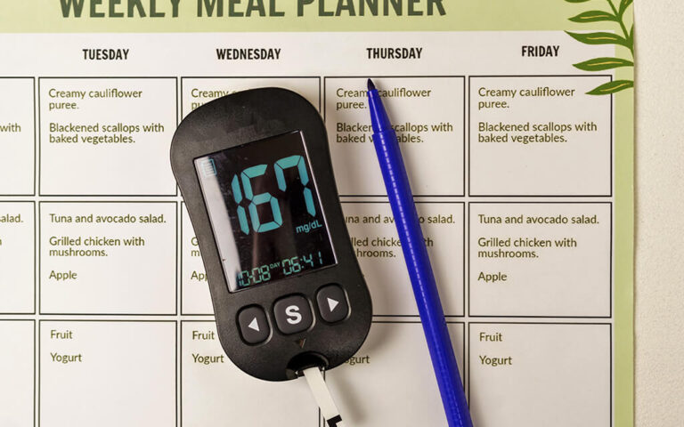

Diabetes is a chronic condition characterized by high blood sugar levels. It occurs when the body either cannot produce enough insulin or cannot effectively use the insulin it produces. Managing diabetes requires a multi-faceted approach, including medication, regular exercise, and a proper diet.
According to the World Health Organisation, diabetes is a serious and growing global health problem, with an estimated 422 million adults living with the condition and around 1.5–1.6 million deaths attributed to it each year.
Recent national data suggest that over 11% of Indians are living with diabetes, highlighting the urgent need for better awareness, early diagnosis, and practical diet guidance.
A patient needs to eat right to manage diabetes in the long term, which can improve blood sugar control and reduce the risk of diabetes-related complications when combined with appropriate medical care.,
This blog provides a practical, Indian-focused diet chart for diabetic patients, along with general tips for healthy living with diabetes; it is meant for education only and does not replace personalised medical advice
Diet is a critical component of diabetes management. A well-planned diet helps control blood sugar levels, manage weight, and reduce the risk of diabetes-related complications. By eating the right foods in the right amounts, diabetic patients can maintain stable blood sugar levels and improve their overall health.
